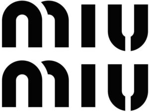

Trade Mark Journal No.2026/010 6 March 2026
WO0000001903434 (3,9,14,18,25,35)
Office of origin: European Union Intellectual Property Office (EUIPO)
Date of International Registration:6 November 2025
Date of designation in the UK:
6 November 2025

International priority date claimed: 4 November 2025
(European Union Intellectual Property Office (EUIPO))
(019270863)
- Class 3
- Non-medicated cosmetics and toiletry preparations; non-medicated dentifrices; perfumery; essential oils; bleaching preparations and other substances for laundry use; cleaning, polishing, scouring and abrasive preparations; cosmetic creams; facial make-up cleansing; preparations for facial make-up cleansing; face toners; hair toners; talcum powder; bath foams; shaving foam; after-shave; after shave lotions; aftershave balms; make-up; powder make-up; make-up removing preparations for the face; beauty masks; mascara; eye liner; eye shadow; lipstick; foundation; nail varnish; personal deodorants; soaps; baby soaps; shampoos; perfumes; eau-de-toilette; essential oils for perfumes; hair gels; hair conditioners; hair straightening preparations; hair sprays; moisturizing hair sprays; hair dyes; sun screen and sun block preparations; after sun lotions; dentifrices; nail care preparations; nail polish; scented lotions, scented body creams and milks; perfumed shower gels; perfumed soaps; body deodorants (perfumery); lipstick cases; incense; air fragrance reed diffusers.
- Class 9
- Navigation, photographic, cinematographic, audiovisual, optical, signaling and teaching apparatus and instruments; apparatus and instruments for recording, transmitting, reproducing or processing sound, images or data; recorded and downloadable media, computer software, blank digital or analogue recording and storage media; computers and computer peripheral devices; diving suits, divers' masks, ear plugs for divers, nose clips for divers and swimmers, gloves for divers, breathing apparatus for underwater swimming; LED [light-emitting diodes]; electronic agendas; cameras [photography]; mobile phones; GPS apparatus; protective helmets for sports; portable computers; electronic publications; smartphones; spectacles, eyeglasses, sunglasses, spectacles cases, chains and cords for eyeglasses; smartwatches; cases for smartphones; headphone cases; ear pads for headphones; headphones; battery chargers; USB chargers; covers for smartphones; goggles; protective masks (not for medical purposes); smartglasses; spectacle lenses; eyeglass lenses; optical lenses; filters for use in photography; smartphone accessories, namely sleeves, straps and lanyards for smartphones, earphones for smartphones, wireless headsets for smartphones, screen protectors for smartphones, smartphone screen magnifiers, selfie sticks used as smartphone accessories, selfie ring lights for smartphones, wireless charging pads for smartphones, chargers for smartphones, joysticks adapted for smartphones, cables for use with smartphones; shoes for protection against accidents, irradiation and fire; wet suits for water-skiing; wet suits for sub-aqua; wet suits; cases for music storage devices.
- Class 14
- Precious metals and their alloys; jewelry; precious and semi-precious stones; horological and chronometric instruments; key rings; key chains; charms; key fobs; key fobs made of leather; watches; clocks; rings (jewelry); earrings; bracelets; boxes of precious metals; cufflinks; watch boxes; necklaces; tie clips.
- Class 18
- Leather and imitations of leather; animal skins and hides; luggage and carrying bags; umbrellas and parasols; walking sticks; collars, leashes and clothing for animals; trunks and travelling bags; baggage; card holders; credit card cases; credit card holders made of leather; wallets; conference folders made of leather; hand bags; trunks [luggage]; travel garment covers; make-up bags sold empty; sports bags; athletics bags; evening bags and shoulder bags; shopping bags; school book bags; shoe bags for travel; beach bags; diaper bags; rucksacks; travelling cases; canvas bags; overnight bags; bags for climbers; satchels; leather handbags; vanity cases, not fitted; cases of leather or leatherboard; briefcases [leather goods]; harness made from leather; leather leashes; card cases [notecases]; briefcases; pocket wallets; tool bags of leather, empty; sling bags for carrying infants; bags; backpacks; wheeled shopping bags; bags for campers; pouches, of leather, for packaging; garment bags for travel; pouch baby carriers; travelling sets [leatherware]; valises; cosmetic cases sold empty; clothing for pets.
- Class 25
- Parts of clothing, footwear, and headwear, namely cuffs, pockets, ready-made linings, heels and heelpieces, cap peaks, hat frames (skeletons); bandanas [neckerchiefs]; headbands [clothing]; stockings; bibs, not of paper; berets; smocks; boas [necklets]; teddies [undergarments]; hosiery; caps [headwear]; bathing caps; shower caps; boots; half-boots; suspenders; collars (clothing); camisoles; pants; bathing trunks; bodices [lingerie]; hoods [clothing]; belts [clothing]; money belts [clothing]; shawls; footmuffs, not electrically heated; sweaters; hats; headgear for wear; socks; slippers; football boots; beach shoes; ski boots; boots for sports; shirts; short-sleeve shirts; tights; shoulder wraps; slips [undergarments]; combinations [clothing]; corselets; corsets [underclothing]; suits; swimsuits; beach clothes; ear muffs [clothing]; neckties; breeches for wear; babies' pants [clothing]; sashes for wear; shirt yokes; esparto shoes or sandals; fur stoles; detachable collars; sock suspenders; scarfs; furs [clothing]; gabardines [clothing]; girdles; galoshes; ski gloves; gloves [clothing]; vests; motorists' clothing; cyclists' clothing; top hats; waterproof clothing; leg warmers; stocking suspenders; garters; jerseys [clothing]; skirts; shorts; petticoats; layettes [clothing]; leggings [trousers]; singlets; cuffs; coats; mantillas; sleep masks; mittens; topcoats; trousers; parkas; dressing gowns; bath robes; pelisses; shirt fronts; ponchos; pullovers; pyjamas; dresses; jumper dresses; bath sandals; underpants; bath slippers; gymnastic shoes; sports shoes; underwear; anti-sweat underwear; brassieres; aprons [clothing]; heelpieces for footwear; heels; tee-shirts; knitwear [clothing]; uniforms; stuff jackets [clothing]; jackets [clothing]; outer clothing; clothing for gymnastics; clothing of leather; clothing of imitations of leather; visors [headwear]; cap peaks; veils [clothing]; snow suits; ski suits; surf wear; tuxedo belts; embroidered clothing; tuxedos; embroidered dresses; embroidered stoles; stoles; overalls; dungarees; undergarments; bermuda shorts; cabans; quilted jackets; quilted coats; winter coats; winter jackets; rain coats; rainwear; winter clothing; rainproof clothing; rainproof footwear; rainproof headwear; balaclavas; denim clothing; eco-leather clothing; eco-leather footwear; eco-leather headwear; sports jerseys; sweatshirts; cashmere clothing; eco-fur clothing.
- Class 35
- Advertising; business management; business administration; office functions; auctioneering; business research; commercial information and advice for consumers [consumer advice shop]; import-export agencies; marketing research; marketing studies; modelling for advertising or sales promotion; organization of exhibitions for commercial or advertising purposes; presentation of goods on communication media, for retail purposes; public relations; shop window dressing; promoting the sale of goods and services of others through promotional events; promoting the goods and services of others via computer and communication networks; advertising by transmission of on-line publicity for third parties through electronic communications networks; organization of fashion shows for promotional purposes; retail services relating to jewelry, watches, perfumery, cosmetics, spectacles, sunglasses, clothing, fabrics, furniture, bed covers, tablecloths, table linen, sporting goods, telephone apparatus, portable telephones, photographic cameras, games and toys, bags and handbags, luggage, footwear, headgear, toiletries, pet products; online retail services relating to jewelry, watches, perfumery, cosmetics, spectacles, sunglasses, clothing, fabrics, furniture, bed covers, tablecloths, table linen, sporting goods, telephone apparatus, portable telephones, photographic cameras, games and toys, bags and handbags, luggage, footwear, headgear, toiletries, pet products.
PRADA S.A.
Representative: MSA IP d.o.o., Radnička cesta 41, HR-10000 ZAGREB, CROATIA